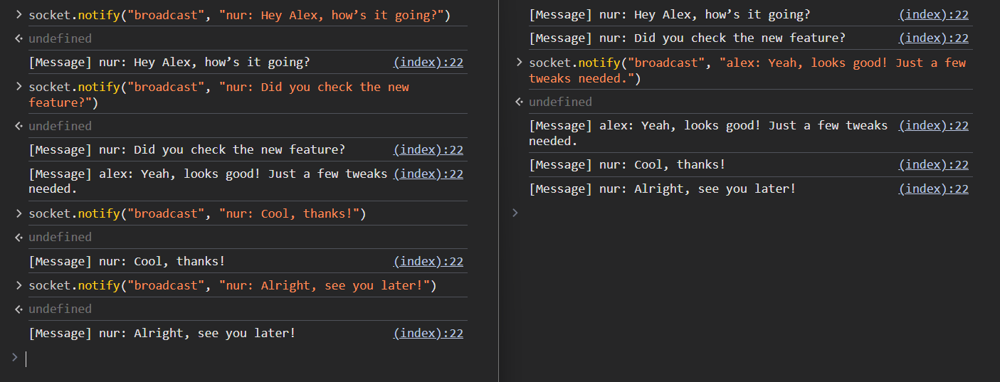

Broadcasting
To implement broadcasting functionality, we need to utilize the concept of Room:
A room is an arbitrary channel that sockets can
joinandleave. It can be used to broadcast events to a subset of clients.
Room Implementation
To implement room, we
need to store Notifier in a map. To broadcast a message, we can simply iterate
through the map and send the packet to all sockets.
To avoid shared memory issues, we can use the Actor pattern.
use axum_socket_io::Notifier;
use std::{collections::HashMap, sync::LazyLock};
use tokio::sync::mpsc::{self, Sender};
pub enum Room {
Join { id: u16, notifier: Notifier },
Broadcast(&'static str, Box<[u8]>),
Leave { id: u16 },
}
impl Room {
pub async fn dispatch(self) {
TASK.send(self).await.unwrap()
}
}
pub static TASK: LazyLock<Sender<Room>> = LazyLock::new(|| {
let (tx, mut rx) = mpsc::channel::<Room>(16);
tokio::spawn(async move {
let mut main_room = HashMap::new();
while let Some(action) = rx.recv().await {
match action {
Room::Join { id, notifier } => {
main_room.insert(id, notifier);
}
Room::Broadcast(ev, msg) => {
for user in main_room.values() {
user.notify(ev, &msg).await.unwrap();
}
}
Room::Leave { id } => {
main_room.remove(&id);
}
}
}
});
tx
});Server-Side (Rust)
socket.notifier() method returns a Notifier, which is responsible for sending notifications.
Notifier is very cheap to create, so you can efficiently create multiple
instances as needed.
use crate::room::*;
use axum_socket_io::{Procedure, SocketIo};
use std::{net::SocketAddr, time::Duration};
use tokio::time::sleep;
pub async fn handle_socket(mut socket: SocketIo, addr: SocketAddr) {
let id = addr.port();
let notifier = socket.notifier();
Room::Join { id, notifier }.dispatch().await;
println!("A user connected: {addr:#?}");
while let Ok(ev) = socket.recv().await {
match ev {
Procedure::Notify(req) => match req.method() {
"broadcast" => {
Room::Broadcast("message", req.data().into())
.dispatch()
.await
}
"ping" => socket.notify("pong", req.data()).await.unwrap(),
_ => {}
/* ... */
},
Procedure::Call(req, res, c) => match req.method() {
"myip" => res.send(addr.to_string()).await.unwrap(),
"uppercase" => {
let msg = std::str::from_utf8(req.data()).unwrap();
res.send(msg.to_uppercase()).await.unwrap()
}
"long_runing_task" => {
c.spawn_and_abort_on_reset(async {
sleep(Duration::from_secs(3)).await;
res.send("done!").await.unwrap();
});
}
_ => {}
},
/* ... */
}
}
println!("user disconnected: {addr:#?}");
Room::Leave { id }.dispatch().await;
}Client-Side (JavaScript)
import { SocketIo } from "https:#sm.sh/client-socket-io@0.1.0";
const decodeText = (data) => new TextDecoder().decode(data);
window.socket = new SocketIo("ws://127.0.0.1:3000/socket");
await socket.connect();
window.rpc = async (...args) => decodeText(await socket.call(...args));
window.long_runing_task = async (timeout) => {
const c = new AbortController();
setTimeout(() => c.abort("TimeOut!"), timeout);
const start = performance.now();
const output = await rpc("long_runing_task", [], { signal: c.signal });
const end = performance.now();
return `${output}: ${Math.round(end - start)}ms`;
};
async function onMessage() {
for await (const msg of socket.on("message")) {
console.log("[Message]", decodeText(msg));
}
}
async function onPong() {
for await (const msg of socket.on("pong")) {
console.log("[Pong]", decodeText(msg));
}
}
[onPong, onMessage].forEach((fn) => fn().catch(console.error));
